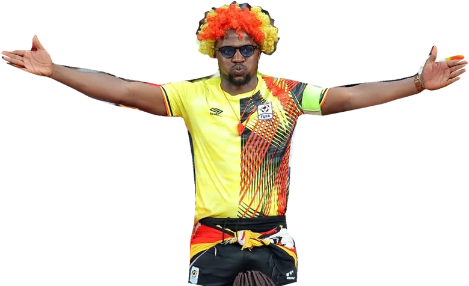
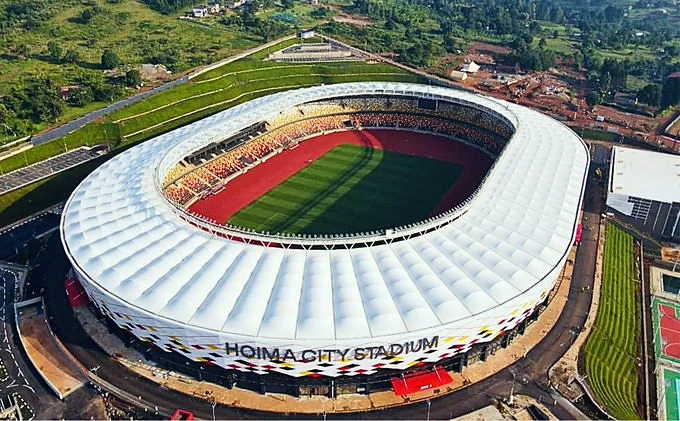
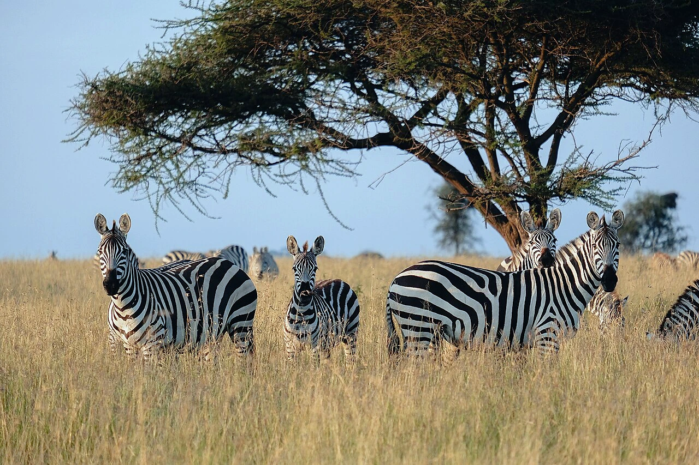

Uganda
UgandaKampala & the Nile
City stories, riverside days and room for a match.
Explore this journeyTHE JOURNEY COLLECTION
Safari days. City stories. Something in between. These sample itineraries are starting points, ready to shape around you.


6 journeys to inspire you
UgandaCity stories, riverside days and room for a match.
Explore this journey
UgandaThe floodlights of Hoima. The wild beyond the whistle.
Explore this journey Kenya
KenyaA little city life. A lot of open sky.
Explore this journey
TanzaniaFollow the light across the endless plains.
Explore this journeyEast AfricaBring your colours. Leave with a few new stories.
Explore this journey East Africa
East AfricaA soft landing, somewhere close to the landscape.
Explore this journeyNo journey ideas match those filters. Try another country or start with a custom trip.
Plan something personalLET THE NEXT CHAPTER BE AFRICA
Come with a plan, or just the beginnings of one. There’s a trail for that.
Start planning